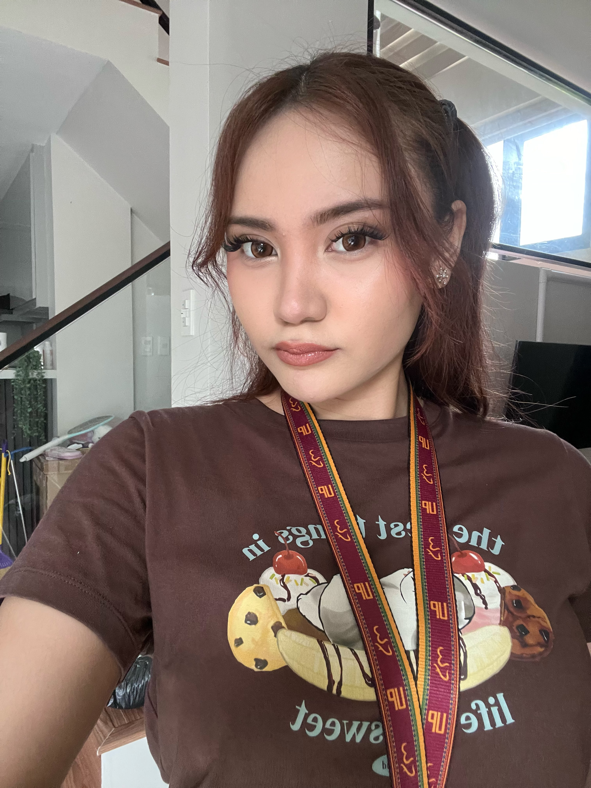

About Me
Hi! I'm Faith, a 19-year-old student who enjoys expressing her creativity through different forms of media. I love exploring photography, theater, baking, and digital design. I enjoy creating projects that allow me to share my creativity with others.
Things I Love
- Baking cheesecakes and cookies
- Watching movies and TV series
- Playing Roblox with friends
- Traveling and exploring new places
Passion Projects
Theater Workshop 2026 — I participated in a theater workshop where I learned more about acting, communication, teamwork, and stage performance skills.
Check it out here: THEATER WORKSHOP 2026
Selling Homemade Baked Goods — A passion project where I create and sell homemade baked treats while improving my creativity and business skills.
Photography Instagram Account — A collection of photographs taken using my digicam that showcases moments and creative perspectives.
Contact
Facebook: Faith Angeles
UP Email: msangeles9@up.edu.ph
Personal Email: faithangeles1003@gmail.com